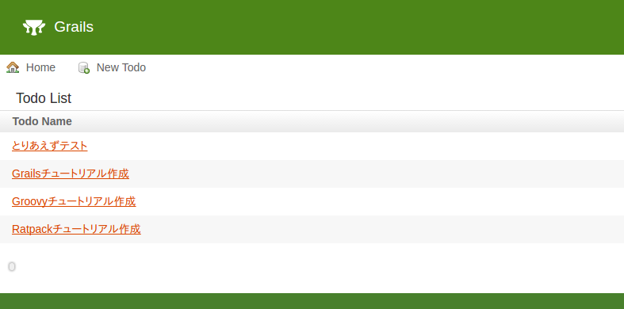
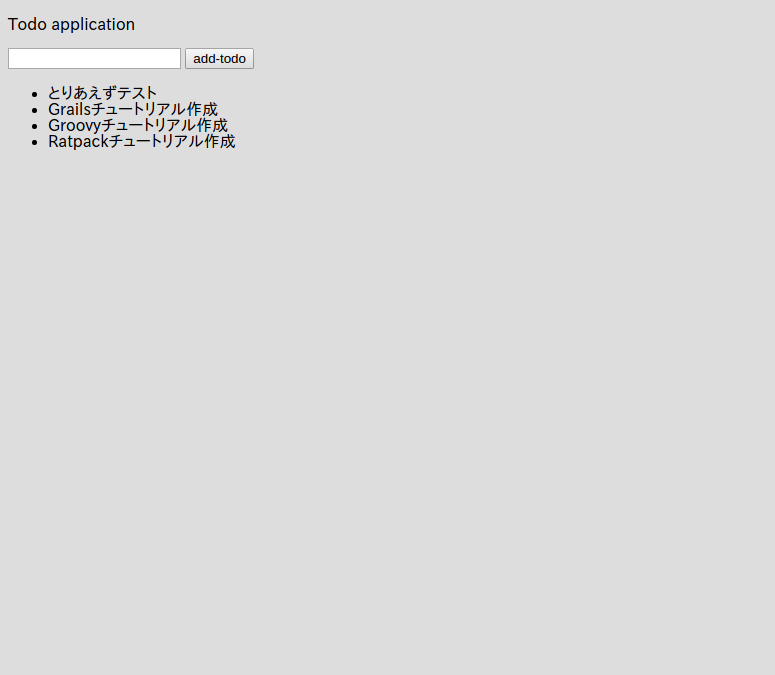

3.1.3.データを保存する
さて、フォームのデータをアプリケーションサーバ（Grails）に送信することが出来ました。
そうなるとやぱりこのデータをデータベースに保存したくなりますよね。
Grailsでは、 標準でH2Databaseが搭載されていて、別途DBをインストールする必要はありません。
標準の設定だと、Grailsが終了（stop-appした段階）で、データベースは破棄されます。
不思議に思われるかも知れませんが、コレはGrailsの学習段階、そして新規にアプリケーションを立ち上げる際にその威力を発揮してくれます。
というのも、標準設定だとGrailsを起動した時点（run-app）で、自動的にデータベース、そしてテーブルがGrailsによって作成されます。
詳細は別途記述しますので、ココではコレ以上細かい話は気にせず、とりあえずGrailsの素晴らしさを体験してみましょう！
まず、インタラクティブモードで以下のコマンドを実行してください。
grails> create-domain-class todo
すると以下の２つのファイルが作成されます。
grails-app/domain/mytodo/Todo.groovy
src/test/groovy/mytodo/TodoSpec.groovy
Controllerの時と同様、２つ目がテスト用です。
そして、最初に作製されているTodo.groovyが ドメイン と呼ばれるもので、MVCでいうM（Model）に該当します。
Grailsでは、このドメインがGORM（Grails Object Relational Mapping)というORMを通して、データベースのテーブルと関連付けられます。
では、作成されたgrails-app/domain/mytodo/Todo.groovyを開いてみましょう。
package mytodo
class Todo {
static constraints = {
}
}
何の変哲もないGroovyファイルですね。 では、以下のように一つプロパティを追加してみます。
package mytodo
class Todo {
String todoName
static constraints = {
}
}
さて、それでは 一旦Grailsを再起動してください。 Grailsでは、ドメインを編集すると、一旦Grailsを再起動しないと上手く反映されません。
面倒くさい、と思われるかも知れませんが、その面倒臭さを超える利便性をこれから目の当たりにします！
grails> stop-app
grails> run-app
再起動できたらhttp://localhost:8080/dbconsoleにアクセスしてみてください。

コレはGrailsが用意してくれているH2データベース用のWEBクライアントです。
基本的にデフォルトの設定のままでOKのはずです。
もしアクセスできない場合は、 JDBC URL: の部分がjdbc:h2:mem:devDb;MVCC=TRUE;LOCK_TIMEOUT=10000;DB_CLOSE_ON_EXIT=FALSEになっているか確認してください。
では、「接続」をクリックしてみてください。

左上を見てください！ 何もしていないのに既にTODOテーブルが存在しています！
別途SQLを書く必要もなく、さらに手動でマイグレーションツール等を毎回手動で実行する必要もありません！
もちろん本番環境用にマイグレーションツールなども用意されています。その当たりはまた別の章で記載します。
しかしGrailsの生産性の高さはコレだにとどまりません。
続いて、インタラクティブコンソールで以下のコマンドを実行してみてください。
3.1.4.Scaffold
grails> create-scaffold-controller todo
すると、grails-app/controllers/mytodo/TodoController.groovyというファイルが生成されます。
つまり、新しいTodoというControllerが作成されたということですね。 中身を見てみましょう。
package mytodo
class TodoController {
static scaffold = Todo
}
１行だけstatic scaffold = Todoという記述があるだけでActionは定義されていません。
では、このコントローラにアクセスしてみましょう。
http://localhost:8080/todo

なんと！先ほどの１行のみのControllerにアクセスするとCRUD機能が利用できるようになっています！
コレがGrailsのScaffoldです。
では実際に「New Todo」をクリックしてデータを保存してみてください。
（ブラウザの言語設定によって、自動的にメニューが翻訳されます！これもGrailsの素晴らしいi18n機能によるものです。）
saveをクリックすると…
保存されました！
当然この画面でデータの編集、削除も出来ます。
適当に数件データを登録したりしてみましょう。
最終的に以下のようにデータを登録しました。

再度http://localhost:8080/dbconsoleにアクセスして、todoテーブルの中身を見てみるとちゃんとデータベースにデータが保存されていることが確認できます！

3.1.5.保存したデータの表示
では、今度はこの保存したデータを実際にGrailsで表示してみましょう！
まず、grails-app/controllers/mytodo/IndexController.groovyのindexアクションを以下のように修正します。
package mytodo
class IndexController {
def index() {
render(view:'/index/index', model: [todos : Todo.listOrderById()])
}
def formTest() {
String todoName = params.todo
render todoName
}
}
そして、View用のファイル、grails-app/views/index/index.gspを以下のように修正します。
<!DOCTYPE html>
<html>
<head>
<meta charset="UTF-8">
<title>ToDo</title>
</head>
<body>
<p>Todo application</p>
<g:form controller="index" action="formTest">
<g:textField name="todo"/>
<g:submitButton name="add-todo">Add Todo</g:submitButton>
</g:form>
<!-- 追加 -->
<ul>
<g:each in="${todos}" var="todo">
<li>${todo.todoName}</li>
</g:each>
</ul>
</body>
</html>
では、http://localhost:8080/index/indexにアクセスしてください。

先ほどScaffoldで登録したToDoの一覧が表示されていますね！